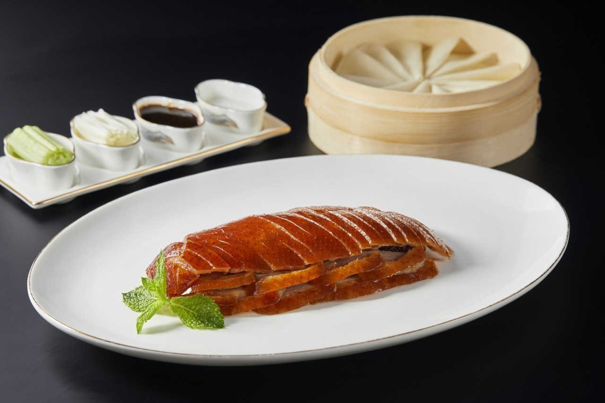

As we all know, Chinese food varies from place to place. However, you can find almost all kinds of Chinese Cuisine in Shanghai, including Beijing Roasted Duck, Sichuan Hotpot and Icy Pink, Cantonese, etc. However, some of them are adjusted a little bit in flavor to meet the requirement of Shanghainese.
Beijing Roasted Duck
Sichuan Hotpot
Sichuan Icy Pink

For Shanghainese, eating crab is a tradition in late Winter and June since crabs are most delicious at that time. Even children know how to deal with crabs. Shanghai people also give high-quality (also expensive) crabs as gifts during holidays. The most typical cuisines with crab are Shanghai crab dumplings, streamed egg with crabs, etc.
Shanghai Crab Dumpling
Shanghai Streamed Egg wth Crabs